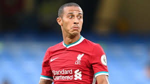
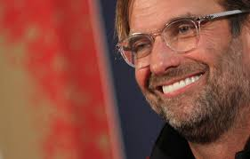

| Four Liverpool players nominated for Fifa Best award | ||||
|---|---|---|---|---|
| Fifa has revealed the shortlists for the The Best Fifa Football awards with four Liverpool players included for the men’s top prize. Virgil van Dijk, Mohamed Salah, Sadio Mane and Thiago Alcantara have all been nominated after the Reds’ Premier League title win last season. The Spaniard collected the Champions League with Bayern Munich in August before moving to Anfield.Reds boss Jurgen Klopp and Leeds head coach Marcelo Bielsa are on the shortlist for the men’s coach of the year. | ||||
|  | ||||
| Mohamed Salah | Sadio Mane | Thiago Alcantara | Virgil van Dijk | |
| You'll Never Walk Alone | ||||
| Liverpool FC: Premier League champions 2019-20 | |||
|---|---|---|---|
|  | |||
| liverpool squad | |||
| Alisson, Alexander-Arnold, Fabinho | Jirgen Klop | ||
| Jordan Henderson, Georginio Wijnaldum | best menager on the world | ||
| Firmino | |||